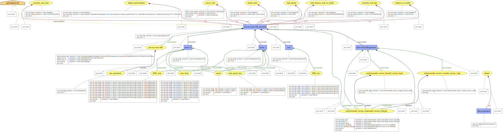
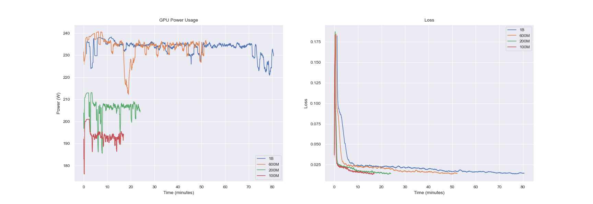
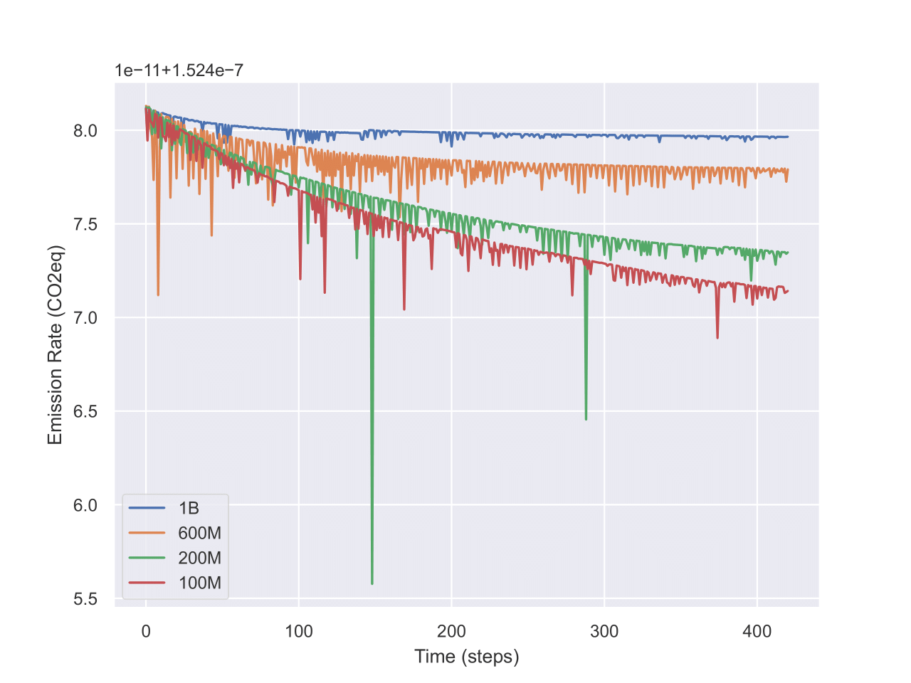
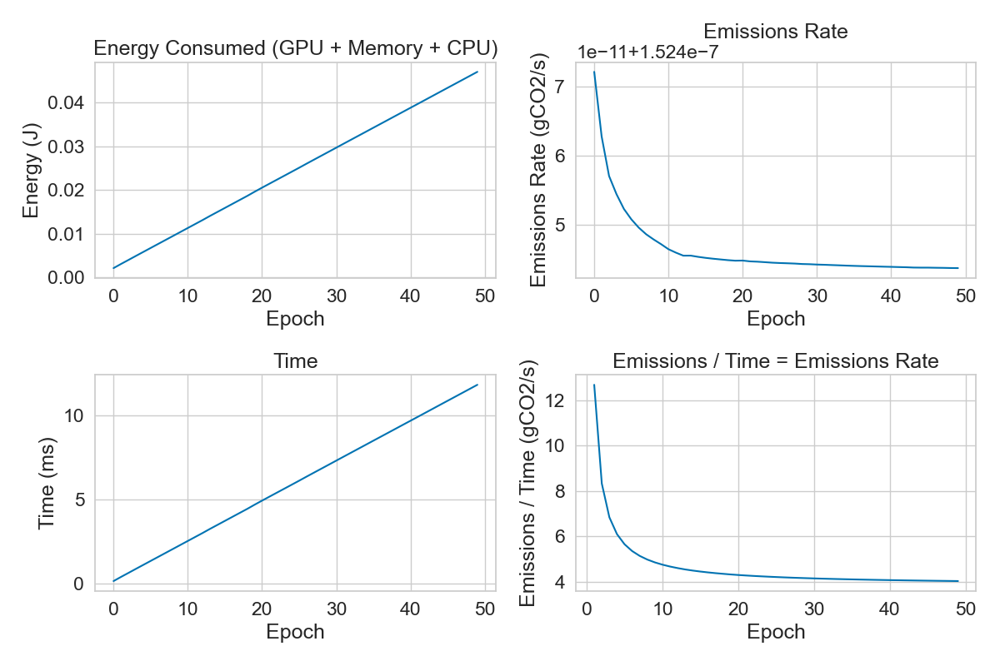
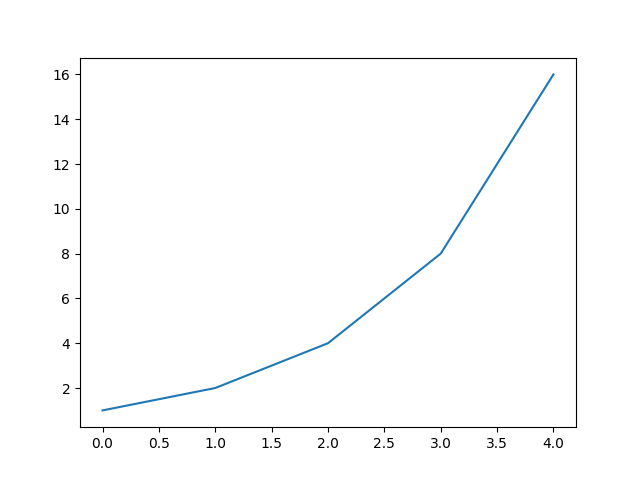

yProv4ML

This library is part of the yProv suite, and provides a unified interface for logging and tracking provenance information in machine learning experiments, both on distributed as well as large scale experiments.
It allows users to create provenance graphs from the logged information, and save all metrics and parameters to json format.
Data Model

Example

The image shown above has been generated from the example program provided in the example directory.
Metrics Visualization


Experiments and Runs
An experiment is a collection of runs. Each run is a single execution of a machine learning model.
By changing the experiment_name parameter in the start_run function, the user can create a new experiment.
All artifacts and metrics logged during the execution of the experiment will be saved in the directory specified by the experiment ID.
Several runs can be executed in the same experiment. All runs will be saved in the same directory (according to the specific experiment name and ID).
Contributors
Installation üë∑‚Äç‚ôÇÔ∏è
Install from the repository:
git clone https://github.com/HPCI-Lab/yProvML.git
cd yProvML
pip install -r requirements.txt
pip install .
# Or use apple extra if on a Mac
pip install .[apple]
# or install for specific arch
pip install .[nvidia] # or .[amd]
or simply:
pip install --no-cache-dir git+https://github.com/HPCI-Lab/yProvML
To install a specific branch of the library:
git clone https://github.com/HPCI-Lab/yProvML.git
cd yProvML
git switch development # or any other branch
pip install -r requirements.txt
pip install .
Setup
Before using the library, the user must set up the MLFlow execution, as well as library specific configurations:
prov4ml.start_run(
prov_user_namespace: str,
experiment_name: Optional[str] = None,
provenance_save_dir: Optional[str] = None,
collect_all_processes: Optional[bool] = False,
save_after_n_logs: int = 100,
rank : Optional[int] = None,
disable_codecarbon : bool = False,
)
The parameters are as follows:
| Parameter | Type | Description |
|---|---|---|
prov_user_namespace | string | Required. User namespace for the provenance graph |
experiment_name | string | Required. Name of the experiment |
provenance_save_dir | string | Required. Directory to save the provenance graph |
collect_all_processes | bool | Optional. Whether to collect all processes |
save_after_n_logs | int | Optional. Save the graph after n logs |
rank | int | Optional. Rank of the process |
disable_codecarbon | Optional[bool] | Optional. Whether to use codecarbon to calculate stats. |
At the end of the experiment, the user must end the run:
prov4ml.end_run(
create_graph: Optional[bool] = False,
create_svg: Optional[bool] = False,
)
| Parameter | Type | Description |
|---|---|---|
create_graph | bool | Optional. Whether to create the graph |
create_svg | bool | Optional. Whether to create the svg |
This call allows the library to save the provenance graph in the specified directory.
Provenance Graph Creation (GraphViz)
The standard method to generate the .dot file containing the provenance graph is to set the create_graph parameter to True.
If the user necessitates to turn a PROV-JSON created with yProv4ML into a .dot file, the following code command can be used:
python -m prov4ml.prov2dot --prov_json prov.json --output prov_graph.dot
Provenance Graph Image (SVG)
The standard method to generate the .svg image of the provenance graph is to set the create_svg parameter to True.
In this case both create_graph and create_svghave to be set to True.
If the user necessitates to turn a .dot file into a .svg file, the following code command can be used:
python -m prov4ml.dot2svg --dot prov_graph.dot --output prov_graph.svg
Or alternatively, using directly the Graphviz suite:
dot -Tsvg -O prov_graph.dot
General Logging
When logging parameters and metrics, the user must specify the context of the information. The available contexts are:
TRAINING: adds the information to the training contextVALIDATION: adds the information to the validation contextTESTING: adds the information to the testing context
Example:
class MyNewContext(Enum):
PREPROCESSING = 3
INFERENCE = 4
Log Parameters
To specify arbitrary training parameters used during the execution of the experiment, the user can call the following function.
prov4ml.log_param(
key: str,
value: str,
)
| Parameter | Type | Description |
|---|---|---|
key | string | Required. Name of the parameter |
value | string | Required. Value of the parameter |
Log Metrics
To specify metrics, which can be tracked during the execution of the experiment, the user can call the following function.
prov4ml.log_metric(
key: str,
value: float,
context:Context,
step: Optional[int] = None,
source: LoggingItemKind = None,
)
| Parameter | Type | Description |
|---|---|---|
key | string | Required. Name of the metric |
value | float | Required. Value of the metric |
context | prov4ml.Context | Required. Context of the metric |
step | int | Optional. Step of the metric |
source | LoggingItemKind | Optional. Source of the metric |
The step parameter is optional and can be used to specify the current time step of the experiment, for example the current epoch. The source parameter is optional and can be used to specify the source of the metric, so for example which library the data comes from. If omitted, yProv4ML will try to automatically determine the origin.
Log Artifacts
To log artifacts, the user can call the following function.
prov4ml.log_artifact(
artifact_path : str,
value : Any,
context: Context,
step: Optional[int] = None,
timestamp: Optional[int] = None,
log_copy_in_prov_directory : bool = True,
)
| Parameter | Type | Description |
|---|---|---|
artifact_path | string | Required. Path to the artifact |
value | Any | Required. The artifact |
context | prov4ml.Context | Required. Context of the artifact |
step | int | Optional. Step of the artifact |
timestamp | int | Optional. Timestamp of the artifact |
log_copy_in_prov_directory | bool | Optional. Copies file in artifact directory |
The function logs the artifact in the current experiment. The artifact can be a file or a directory.
All logged artifacts are saved in the artifacts directory of the current experiment, while the related information is saved in the PROV-JSON file, along with a reference to the file.
The value parameter can be any artifact, a file, a path, a value. yProv4ML identifies the correct way to store this parameter in memoty and connect it to the provenance file.
If log_copy_in_prov_directory is True, the file at the specified value parameter is copied inside the artefacts directory.
Log Models
prov4ml.log_model(
model: Union[torch.nn.Module, Any],
model_name: str = "default",
log_model_info: bool = True,
log_model_layers : bool = False,
log_as_artifact=True,
)
| Parameter | Type | Description |
|---|---|---|
model | Union[torch.nn.Module, Any] | Required. The model to be logged |
model_name | string | Optional. Name of the model |
log_model_info | bool | Optional. Whether to log model information |
log_model_layers | bool | Optional. Whether to log model layers |
log_as_artifact | bool | Optional. Whether to log the model as an artifact |
It sets the model for the current experiment. It can be called anywhere before the end of the experiment.
The same call also logs some model information, such as the number of parameters and the model architecture memory footprint.
The saving of these information can be toggled with the log_model_info = False parameter.
The model can be saved as an artifact by setting the log_as_artifact = True parameter, which will save its parameters in the artifacts directory and reference the file in the PROV-JSON file.
The model layers details can be logged in an external .json file, which will be linked to the provenance file as an artefact.
The parameters saved for each layer depend on the type of the latter, but generally include input and output size, as well as dtype.
prov4ml.save_model_version(
model: Union[torch.nn.Module, Any],
model_name: str,
context: Context,
step: Optional[int] = None,
timestamp: Optional[int] = None
)
The save_model_version function saves the state of a PyTorch model and logs it as an artifact, enabling version control and tracking within machine learning experiments.
| Parameter | Type | Description |
|---|---|---|
model | torch.nn.Module | Required. The PyTorch model to be saved. |
model_name | str | Required. The name under which to save the model. |
context | Context | Required. The context in which the model is saved. |
step | Optional[int] | Optional. The step or epoch number associated with the saved model. |
timestamp | Optional[int] | Optional. The timestamp associated with the saved model. |
This function saves the model's state dictionary to a specified directory and logs the saved model file as an artifact for provenance tracking. It ensures that the directory for saving the model exists, creates it if necessary, and uses the torch.save method to save the model. It then logs the saved model file using log_artifact, associating it with the given context and optional step number.
If save_model_version is called several times, yProv4ML creates an incremental id for each model variation, and saves all in a sub-directory.
Log Datasets
yProv4ML offers helper functions to log information and stats on specific datasets.
prov4ml.log_dataset(
dataset : Union[DataLoader, Subset, Dataset],
label : str
)
| Parameter | Type | Description |
|---|---|---|
dataset | Union[DataLoader, Subset, Dataset] | Required. The dataset to be logged |
label | string | Required. The label of the dataset |
The function logs the dataset in the current experiment. The dataset can be a DataLoader, a Subset, or a Dataset class from pytorch. Parameters which are logged include batch size, number of workers, whether the dataset is shuffled, the number of batches and the number of total samples.
Provenance Collection Creation
The provenance collection functionality can be used to create a summary file linking all PROV-JSON files generated during a run. These files come from distributed execution, where each process generates its own log file, and the user may want to create a single file containing all the information.
The collection can be created with the following command:
python -m prov4ml.prov_collection --experiment_path experiment_path --output_dir output_dir
Where experiment_path is the path to the experiment directory containing all the PROV-JSON files, and output_dir is the directory where the collection file will be saved.
Metrics üìä
This section covers the different types of metrics which can be collected using yProv4ml. These metrics provide insights into efficiency, resource usage, and overall effectiveness. Below is an overview of the key metric categories:
- Carbon Metrics: Focuses on tracking and analyzing carbon emissions and HW impact.
- System Metrics: Covers performance-related metrics such as CPU usage, memory consumption, and GPU stats.
- Time Metrics: Offers directives for time-based measurements.
- Registering Metrics: Offers the ability to pre-process data "in-situ".
Each subsection provides detailed explanations and methodologies for tracking and interpreting these metrics.
Carbon Metrics
The prov4ml.log_carbon_metrics function logs carbon-related system metrics during machine learning experiments. The information logged is related to the time between the last call to the function and the current call.
prov4ml.log_carbon_metrics(
context: Context,
step: Optional[int] = None,
)
| Parameter | Type | Description |
|---|---|---|
context | prov4ml.Context | Required. Context of the metric |
step | int | Optional. Step of the metric |
This function logs the following system metrics:
| Parameter | Description | Unit |
|---|---|---|
Emissions | Emissions of the system | gCO2eq |
Emissions rate | Emissions rate of the system | gCO2eq/s |
CPU power | Power usage of the CPU | W |
GPU power | Power usage of the GPU | W |
RAM power | Power usage of the RAM | W |
CPU energy | Energy usage of the CPU | J |
GPU energy | Energy usage of the GPU | J |
RAM energy | Energy usage of the RAM | J |
Energy consumed | Energy consumed by the system | J |
How is CO2Eq calculated?
The CO2 equivalent (CO2eq) is a metric used to compare the emissions of CO2.
- CO2eq is calculated by multiplying the energy consumed by the system by carbon intensity.
- Energy is calculated by multiplying the power usage by the time interval, this is done for each component (CPU, GPU, RAM).
- Carbon intensity is the amount of CO2 emitted per unit of energy consumed. It can be obtained in three ways:
- Using cloud providers' carbon intensity data (Google).
- Using the carbon intensity of the grid where the system is running (per country).
- Using the electricity mix of the grid where the system is running (renewables / gas / petroleum / coal).
Why is it decreasing?
The emissions rate can decrease due to the following reasons:
- Idle time: The system is not being used, so the power usage is low.
- Energy efficiency: The system is using less power to perform the same tasks.
- Startup time: The system is starting up, so the power usage is high at the beginning.
After plotting the metrics saved with codecarbon, we can see that the emissions rate decreases over time.

This shows that energy is mostly constant over time, while the emissions rate decreases. This is due to the ratio between energy and time, which is decreasing over time.
System Metrics
The prov4ml.log_system_metrics function logs critical system performance metrics during machine learning experiments. The information logged is related to the time between the last call to the function and the current call.
prov4ml.log_system_metrics(
context: Context,
step: Optional[int] = None,
)
| Parameter | Type | Description |
|---|---|---|
context | prov4ml.Context | Required. Context of the metric |
step | int | Optional. Step of the metric |
synchronous | bool | Optional. Whether to log the metric synchronously |
timestamp | int | Optional. Timestamp of the metric |
This function logs the following system metrics:
| Parameter | Description | Unit |
|---|---|---|
Memory usage | Memory usage of the system | % |
Disk usage | Disk usage of the system | % |
Gpu memory usage | Memory usage of the GPU | % |
Gpu usage | Usage of the GPU | % |
FLOPs per Epoch
The log_flops_per_epoch function logs the number of floating-point operations (FLOPs) performed per epoch for a given model and dataset.
prov4ml.log_flops_per_epoch(
label: str,
model: Union[torch.nn.Module, Any],
dataset: Union[torch.utils.data.Dataset, torch.utils.data.DataLoader, torch.utils.data.Subset],
context: Context,
step: Optional[int] = None
):
| Parameter | Type | Description |
|---|---|---|
label | string | Required. Label of the FLOPs |
model | Union[torch.nn.Module, Any] | Required. Model used for the FLOPs calculation |
dataset | string | Required. Dataset used for the FLOPs calculation |
context | prov4ml.Context | Required. Context of the metric |
step | int | Optional. Step of the metric |
FLOPs per Batch
The log_flops_per_batch function logs the number of floating-point operations (FLOPs) performed per batch for a given model and batch of data.
prov4ml.log_flops_per_batch(
label: str,
model: Union[torch.nn.Module, Any],
batch: Any,
context: Context,
step: Optional[int] = None,
):
| Parameter | Type | Description |
|---|---|---|
label | string | Required. Label of the FLOPs |
model | Union[torch.nn.Module, Any] | Required. Model used for the FLOPs calculation |
batch | Any | Required. Batch of data used for the FLOPs calculation |
context | prov4ml.Context | Required. Context of the metric |
step | int | Optional. Step of the metric |
Execution Time
prov4ml.log_current_execution_time(
label: str,
context: Context,
step: Optional[int] = None
)
| Parameter | Type | Description |
|---|---|---|
label | string | Required. Label of the code portion |
context | prov4ml.Context | Required. Context of the metric |
step | int | Optional. Step of the metric |
The log_current_execution_time function logs the current execution time of the code portion specified by the label.
The log_execution_start_time function logs the start time of the current execution.
It is automatically called at the beginning of the experiment.
Example:
prov4ml.log_execution_start_time()
# run training process or other very important tasks...
prov4ml.log_execution_end_time()
The log_execution_end_time function logs the end time of the current execution. It is automatically called at the end of the experiment.
Register Metrics for custom Operations
After collection of a specific metric, it's very often the case that a user may want to aggregate that information by applying functions such as mean, standard deviation, or min/max.
yProv4ML allows to register a specific metric to be aggregated, using the function:
prov4ml.register_final_metric(
metric_name : str,
initial_value : float,
fold_operation : FoldOperation
)
where fold_operation indicates the function to be applied to the data.
Several FoldOperations are already defined, such as MAX, MIN, ADD and SUBRACT. In any case the user is always able to define its own custom function, by either defining one with signature:
Example:
def custom_foldOperation(x, y):
return x // y
Or by passing a lambda function:
Example:
prov4ml.register_final_metric("my_metric", 0, lambda x, y: x // y)
The output of the aggregated metric is saved in the PROV-JSON file, as an attribute of the current execution.
Reproducing Experiments using Provenance Files
With workflow streamlined by yProv4ML, it is trivial to guarantee reproducibility of experiments even just sharing a single provenance file. To guarantee the necessary amount of information are present in the prov.json file however, some calls to the library have to be executed.
def log_execution_command(cmd : str): ...
Simply logs the execution command for it to be retrieved by the reproduction script later. This is often a call to python3
def log_source_code(path: Optional[str] = None): ...
Logs as an artifact a path to the source code. This could be a single python file (e.g. main.py), a repository link (if the path is not specified in the arguments), or an entire directory of source files. In case the source code is not on github, the source files are all copied inside the artifacts directory, and the path logged inside the provenance file will reference whis copy.
def log_input(inp : Any, log_copy_in_prov_directory : bool = True): ...
The directive log_input saves with incremental ids a various number of inputs, which are user defined.
def log_output(out : Any, log_copy_in_prov_directory : bool = True): ...
The directive log_output saves with incremental ids a various number of outputs, which are user defined.
Provenance Viewer
Get Data from Provenance Files
yProv4ml offers a set of directives to easilyy extract the information logged from the provenance.json file.
Example:
import json
data = json.load(open(path_to_prov_json))
Utility Functions
def get_metrics(data : pd.DataFrame, keyword : Optional[str] = None) -> List[str]
The get_metrics function retrieves all available metrics from the provided provjson file. If a keyword is specified, it filters the results to include only metrics that match the keyword.
| Parameter | Type | Default | Description |
|---|---|---|---|
data | pd.DataFrame | Required | The dataset containing metrics. |
keyword | Optional[str] | None | If provided, filters the metrics to only those containing this keyword. |
def get_metric(
data : pd.DataFrame,
metric : str,
time_in_sec : bool = False,
time_incremental : bool = False,
sort_by : Optional[str] = None,
start_at : Optional[int] = None,
end_at : Optional[int] = None
) -> pd.DataFrame
The get_metric function extracts a specific metric from the dataset, with additional options for formatting and filtering:
- It allows conversion of time-based metrics to seconds.
- It can return time-incremental values instead of absolute values.
- Sorting and range selection (start and end points) can be applied.
| Parameter | Type | Default | Description |
|---|---|---|---|
data | pd.DataFrame | Required | The dataset containing metrics. |
metric | str | Required | The specific metric to retrieve. |
time_in_sec | bool | False | If True, converts time-based metrics to seconds. |
time_incremental | bool | False | If True, returns incremental values instead of absolute values. |
sort_by | Optional[str] | None | Sorts the metric values by the specified column. |
start_at | Optional[int] | None | Filters data to start at this index. |
end_at | Optional[int] | None | Filters data to end at this index. |
The return value for this function is a dataframe containing the following columns:
value: contains the metric itemsepoch: contains the corresponding epochstime: contains the corresponding time steps
def get_param(data : pd.DataFrame, param : str) -> Any
Retrieves a single value corresponding to the given param. This function is useful when the parameter is expected to have a unique value and the label exactly matches in the prov json file.
def get_params(data : pd.DataFrame, param : str) -> List[Any]
Retrieves a list of values for the given param. This is useful when multiple values exist for the parameter (for example when marked with an incremental ID) in the provenance json file, allowing further analysis or aggregation.
| Parameter | Type | Return Type | Description |
|---|---|---|---|
data | pd.DataFrame | - | The dataset containing parameters. |
param | str | - | The specific parameter to retrieve. |
Let me know if you need further clarification! üöÄ
More utility functions are also available:
def get_avg_metric(data, metric) -> pd.DataFrame: ...
def get_sum_metric(data, metric) -> pd.DataFrame: ...
def get_metric_time(data, metric, time_in_sec=False) -> pd.DataFrame: ...
Examples
Example of usage with PyTorch
This section provides an example of how to use Prov4ML with PyTorch.
The following code snippet shows how to log metrics, system metrics, carbon metrics, and model versions in a PyTorch training loop.
Example:
for epoch in tqdm(range(EPOCHS)):
for i, (x, y) in enumerate(train_loader):
optim.zero_grad()
y_hat = mnist_model(x)
loss = F.cross_entropy(y_hat, y)
loss.backward()
optim.step()
prov4ml.log_metric("MSE_train", loss, context=prov4ml.Context.TRAINING, step=epoch)
# log system and carbon metrics (once per epoch), as well as the execution time
prov4ml.log_carbon_metrics(prov4ml.Context.TRAINING, step=epoch)
prov4ml.log_system_metrics(prov4ml.Context.TRAINING, step=epoch)
# save incremental model versions
prov4ml.save_model_version(mnist_model, f"mnist_model_version_{epoch}", prov4ml.Context.TRAINING, epoch)
Example of usage with PyTorch Lightning
This section provides an example of how to use Prov4ML with PyTorch Lightning.
In any lightning module the calls to train_step, validation_step, and test_step can be overridden to log the necessary information.
Example:
def training_step(self, batch, batch_idx):
x, y = batch
y_hat = self(x)
loss = self.loss(y_hat, y)
prov4ml.log_metric("MSE_train", loss, prov4ml.Context.TRAINING, step=self.current_epoch)
prov4ml.log_flops_per_batch("train_flops", self, batch, prov4ml.Context.TRAINING,step=self.current_epoch)
return loss
This will log the mean squared error and the number of flops per batch for each the training step.
Alternatively, the on_train_epoch_end method can be overridden to log information at the end of each epoch.
Example:
def on_train_epoch_end(self) -> None:
prov4ml.log_metric("epoch", self.current_epoch, prov4ml.Context.TRAINING, step=self.current_epoch)
prov4ml.save_model_version(self, f"model_version_{self.current_epoch}", prov4ml.Context.TRAINING, step=self.current_epoch)
prov4ml.log_system_metrics(prov4ml.Context.TRAINING,step=self.current_epoch)
prov4ml.log_carbon_metrics(prov4ml.Context.TRAINING,step=self.current_epoch)
prov4ml.log_current_execution_time("train_epoch_time", prov4ml.Context.TRAINING, self.current_epoch)
Usage with itwinAI Logger
Viewing Data
Example:
import pandas as pd
import json
import matplotlib.pyplot as plt
# Import the directives from prov4ml
import prov4ml.utils.prov_getters as pg
data = json.load(open(file_path))
# Get only metrics which have been collected during training phase
metric_keys = pg.get_metrics(data, keyword="TRAINING")
print(metric_keys)
# Creating mean values dictionary
metric = pg.get_metric(data, metric_keys[0])
plt.plot(metric["value"])
plt.show()

Reproducible Example
Example:
import prov4ml
prov4ml.start_run(
prov_user_namespace="www.example.org",
experiment_name="reproducible_example",
provenance_save_dir="prov",
save_after_n_logs=100,
collect_all_processes=True,
)
prov4ml.log_source_code()
prov4ml.log_execution_command("python3 examples/reproducibility_example.py")
def square(x):
return x**2
for i in range(1, 10):
prov4ml.log_input(i)
o = square(i)
prov4ml.log_output(o)
prov4ml.end_run(True, True)